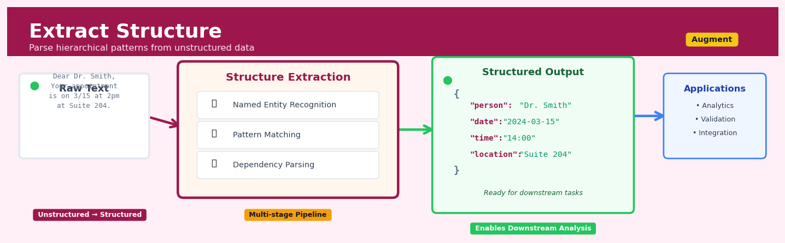

Extract Structure#


The most common mistake I see is teams treating structure extraction as a one-time preprocessing step instead of an iterative refinement process. Your extraction patterns will drift as your data evolves, so build validation loops that surface when your parsers start failing on new entity types or formats. Structure extraction is never truly done—it's a living system that needs monitoring just like your production models.
The 60-Second Version#
What it does: Extract Structure reads messy text—like emails, PDFs, or customer notes—and automatically pulls out the specific facts you care about into clean spreadsheet rows or database records.
When to use it: You have piles of unstructured documents where humans currently copy-paste information by hand, and you need that information organized for analysis, reporting, or workflow automation.
What you get back: A structured table where each column is a field you defined (customer name, invoice amount, due date, sentiment) and each row is one document, ready to query, visualize, or feed into your systems.
At a Glance:
Difficulty |
Moderate |
Typical runtime |
Seconds to minutes on 1,000 documents |
What you bring |
Text documents and a clear list of fields to extract |
What you get |
Structured data table matching your schema |
Heuristix bucket |
Augment — AI & Language Intelligence |
The one thing to understand: Extract Structure is only as reliable as the schema you define—garbage fields in, garbage data out, no matter how sophisticated the model.
Learning Objectives#
After reading this chapter, a business user will be able to:
Identify documents and text sources in your organization where Extract Structure can replace manual data entry or spreadsheet work, saving time and reducing errors.
Read extracted structured records (fields, entities, relationships) from invoices, contracts, or reports and explain to colleagues what was captured and why it matters.
Decide whether an extraction result is sufficiently accurate for your use case and determine when human review is needed before using the data in downstream systems.
After reading this chapter, a data scientist will be able to:
Build an Extract Structure pipeline using LLMs with a defined schema, handling variable document formats, missing fields, and ambiguous entity references.
Adjust schema definitions, prompt instructions, and model temperature settings to balance extraction precision, recall, and inference cost for your specific document types.
Evaluate extraction quality using field-level accuracy metrics, spot systematic errors like hallucinated entities or incorrect relationship mappings, and implement validation rules to catch failures before production.
Overview#
Extract Structure is a natural language processing technique that transforms unstructured or semi-structured text into well-defined, machine-readable data formats by leveraging large language models (LLMs) to identify and extract specific fields, entities, and relationships according to a predefined schema. It belongs to the broader family of information extraction methods, sitting at the intersection of named entity recognition, relation extraction, and schema-guided generation. The core purpose is to convert free-form text—such as emails, reports, invoices, medical notes, or legal documents—into structured records that can be immediately used in databases, analytics pipelines, and business applications.
When to Use This#
Use this when:
Digitising paper-based or scanned documents — When you have OCR output from invoices, receipts, contracts, or forms and need to extract specific fields (dates, amounts, parties, line items) into a database schema.
Processing customer communications at scale — When incoming emails, chat transcripts, or support tickets need to be parsed into structured records containing intent, sentiment, product references, and requested actions.
Normalising data from heterogeneous sources — When data arrives in varying free-text formats (e.g., shipping manifests from different carriers) and must be consolidated into a single canonical schema.
Extracting clinical information from medical notes — When unstructured physician notes, discharge summaries, or pathology reports need to be converted into structured fields for clinical decision support or research.
Building knowledge graphs from text corpora — When entities and their relationships must be extracted from documents to populate a graph database for downstream search, recommendation, or reasoning.
Automating compliance and audit workflows — When legal or regulatory documents must be parsed to extract obligations, deadlines, parties, and conditions for tracking and reporting.
Enriching CRM records from call transcripts — When sales or support call transcriptions need to be parsed to populate structured fields such as customer objections, competitor mentions, or next steps.
Do NOT use this when:
You need high-precision extraction with zero tolerance for error — LLM-based extraction is probabilistic; for safety-critical applications (e.g., medication dosing), human review or rule-based validation is essential.
Your text is already structured or easily parseable — If the data follows a strict format (CSV, fixed-width, well-formed XML), traditional parsing is faster, cheaper, and more reliable.
The extraction schema is undefined or highly ambiguous — Extract Structure requires a clear target schema; if you are still exploring what fields exist, use exploratory NLP or topic modelling first.
Questions This Answers#
Unlocking Value from Unstructured Documents#
Can we automatically pull customer names, order amounts, and dates from these 10,000 supplier emails instead of having someone type them into spreadsheets?
What’s actually in these customer support tickets — are we tracking complaints about pricing, product quality, or shipping delays?
How do we get contract terms, renewal dates, and payment schedules out of 500 legal agreements sitting in SharePoint into our CRM?
Can we extract lab results, diagnosis codes, and prescribed medications from physician notes to populate our patient database?
What product features and price points are our competitors mentioning in their quarterly reports and press releases?
Accelerating Operations and Reducing Manual Work#
How much time would we save if we could automatically process expense reports and invoices instead of having finance review each one manually?
Can we standardize the property details — square footage, number of bedrooms, asking price — from 50 different real estate listing formats into one clean database?
What’s the fastest way to turn these 2,000 job applications into a spreadsheet with education, experience, and skills so we can start screening candidates?
How do we capture equipment IDs, failure types, and repair costs from maintenance logs written by 30 different technicians?
Enabling Better Analysis and Decision-Making#
If we could structure all our customer feedback from emails and surveys, which pain points appear most frequently across enterprise versus SMB accounts?
Can we compare contract terms — pricing models, SLAs, and termination clauses — across our top 100 vendors to identify renegotiation opportunities?
What product specifications and compliance certifications should we extract from technical data sheets to build a searchable supplier catalog?
How do we turn analyst reports and market research PDFs into structured data showing market size, growth rates, and competitive positioning by region?
How It Works#
Imagine you’re a hospital administrator drowning in patient intake forms. Every day, nurses write free-form notes like “Patient Sarah Chen, age 34, complained of persistent headache for 3 days, BP 140/90, prescribed ibuprofen 400mg.” You need this information in your computer system with separate fields: patient name, age, symptoms, vital signs, and medications. Right now, someone sits with a highlighter marking each piece of information in a different color, then manually types each highlighted part into the right box in your database. Extract Structure is like having an intelligent assistant who instantly reads each note, recognizes what each piece of information represents, and fills out the structured form automatically—transforming messy paragraphs into clean, organized database records in seconds.
UNSTRUCTURED TEXT INPUT
┌───────────────────────────────────────────────────────┐
│ "Patient Sarah Chen, age 34, complained of persistent │
│ headache for 3 days, BP 140/90, prescribed │
│ ibuprofen 400mg." │
└───────────────────────────────────────────────────────┘
│
↓
┌───────────────────────┐
│ Extract Structure │
│ (LLM identifies & │
│ maps to schema) │
└───────────────────────┘
│
↓
STRUCTURED DATA OUTPUT (Database Record)
┌────────────────┬─────────────────────────────────┐
│ Field │ Value │
├────────────────┼─────────────────────────────────┤
│ patient_name │ Sarah Chen │
│ age │ 34 │
│ chief_complaint│ persistent headache │
│ duration │ 3 days │
│ blood_pressure │ 140/90 │
│ medication │ ibuprofen 400mg │
└────────────────┴─────────────────────────────────┘
Step 1: Define your target structure. You first tell the system exactly what fields you want to extract and what type of information belongs in each field. For our hospital example, you’d specify fields like “patient_name” (text), “age” (number), “chief_complaint” (text), and “blood_pressure” (formatted as numbers). This schema acts as a template the system will try to fill.
Step 2: Feed the unstructured text to the language model. The raw text—your messy intake note, email, or document—gets sent to a large language model that has been trained on billions of text examples and understands how information is typically expressed in natural language.
Step 3: The model reads and identifies relevant information. Using its training, the model scans through the text and recognizes patterns: “Sarah Chen” follows the word “Patient” and precedes an age, so it’s likely a name. “140/90” matches the pattern of blood pressure readings. The model essentially highlights each piece of information mentally, just like your human highlighter would.
Step 4: Match identified information to schema fields. The model maps each identified piece to the corresponding field in your target structure. “Sarah Chen” goes into the patient_name field, “34” goes into age, and so on. If a field has no matching information in the text, it might leave it empty or mark it as null.
Step 5: Output the structured record. The system returns a clean, machine-readable data structure—typically JSON or a database row—with all the extracted information properly organized and labeled, ready to be stored, analyzed, or processed by other systems.
The key insight: Extract Structure works because large language models have learned the hidden patterns of how humans express information in text, allowing them to recognize what each piece of text means contextually and map it to formal categories without explicit programming rules.
The Intuition#
Imagine you are a highly trained legal assistant whose job is to read contracts and fill out a standardised intake form. The form has specific fields: party names, effective date, termination clause, governing law, and payment terms. Each contract you receive is written differently—some are verbose, some terse, some use unusual clause structures—but your expertise allows you to identify the relevant information and slot it into the correct fields. You are not creating new information; you are recognising where the required information exists in the text and transcribing it into a structured format.
Extract Structure performs exactly this task, but at machine scale. The “expertise” comes from a large language model that has been trained on vast corpora of text and has learned the statistical regularities of language—how entities are typically mentioned, how dates are formatted, how clauses are structured. When given a schema (the “intake form”) and a document (the “contract”), the model uses its learned representations to identify spans of text that correspond to each field and outputs them in a structured format such as JSON.
The key insight is that modern LLMs excel at conditional generation: given a prompt that specifies the task (the schema) and the context (the document), they can generate outputs that conform to the requested structure. This is fundamentally different from traditional named entity recognition, which relies on sequence labelling over a fixed taxonomy. Extract Structure is schema-flexible—you can define arbitrary fields at inference time without retraining the model. This makes it extraordinarily powerful for business applications where schemas evolve or vary across use cases.
The Mathematics#
Problem Formulation#
Let \(\mathcal{D}\) denote an unstructured text document represented as a sequence of tokens \(\mathbf{x} = (x_1, x_2, \ldots, x_n)\) where \(x_i \in \mathcal{V}\) and \(\mathcal{V}\) is the vocabulary. Let \(\mathcal{S} = \{f_1, f_2, \ldots, f_k\}\) denote a schema comprising \(k\) fields, where each field \(f_j\) has an associated type \(\tau_j \in \{\text{string}, \text{number}, \text{date}, \text{boolean}, \text{list}, \text{object}\}\).
The objective is to learn a function \(g: (\mathbf{x}, \mathcal{S}) \mapsto \mathbf{y}\) where \(\mathbf{y} = (y_1, y_2, \ldots, y_k)\) is a structured output and each \(y_j\) is the extracted value for field \(f_j\).
Probabilistic Framework#
We model extraction as conditional generation. Given a prompt \(\mathbf{p}\) that encodes the schema \(\mathcal{S}\) and the document \(\mathbf{x}\), the model generates an output sequence \(\mathbf{y} = (y_1, y_2, \ldots, y_m)\) autoregressively:
The model parameters \(\theta\) are typically frozen (pretrained LLM) or fine-tuned on domain-specific extraction tasks. The prompt \(\mathbf{p}\) is constructed as:
where \(\mathbf{s}_{\text{instructions}}\) provides task-specific guidance, \(\mathbf{s}_{\text{schema}}\) is a serialised representation of \(\mathcal{S}\) (often as JSON schema or field descriptions), and \(\mathbf{s}_{\text{document}}\) is the input text.
Constrained Decoding#
To guarantee that the output \(\mathbf{y}\) conforms to the schema, we employ constrained decoding. Let \(\mathcal{G}\) be a context-free grammar (CFG) that defines valid JSON structures conforming to schema \(\mathcal{S}\). At each decoding step \(t\), we mask the vocabulary to only allow tokens that lead to valid partial parses:
where \(\mathcal{V}_{\text{valid}}(y_{1:t-1}, \mathcal{G})\) is the set of tokens that maintain a valid prefix according to grammar \(\mathcal{G}\).
Confidence Estimation#
For each extracted field \(y_j\), we can compute a confidence score. One common approach uses the geometric mean of token probabilities:
Alternatively, using log-probabilities for numerical stability:
Assumptions#
Schema completeness: The schema \(\mathcal{S}\) must enumerate all fields of interest; the model cannot extract fields not specified.
Document coverage: The document \(\mathbf{x}\) is assumed to contain (or potentially contain) information for each field; missing fields should be handled explicitly.
Language model competence: The LLM has sufficient world knowledge and linguistic capability to interpret the document and match information to schema fields.
Token budget: The combined length of prompt \(\mathbf{p}\) and output \(\mathbf{y}\) must fit within the model’s context window \(L_{\max}\).
Edge Cases#
Missing fields: When information for field \(f_j\) is absent from the document, the model should output \(y_j = \texttt{null}\) or a designated sentinel value.
Ambiguous mentions: When multiple candidate values exist (e.g., multiple dates), the schema should specify extraction rules (first, last, all).
Nested structures: For hierarchical schemas with nested objects or arrays, the grammar \(\mathcal{G}\) must encode the full recursive structure.
Relationship to Other Methods#
Extract Structure generalises several classical NLP tasks:
Named Entity Recognition (NER): When \(\mathcal{S}\) contains fields corresponding to entity types (PERSON, ORG, DATE), extraction reduces to NER with the advantage of schema flexibility.
Relation Extraction: By defining fields that capture entity pairs and their relationships, the method subsumes triple extraction.
Slot Filling: In dialogue systems, Extract Structure performs slot filling when the schema represents dialogue state slots.
Understanding the Mathematics#
Probability of Extracting a Structured Field#
The equation:
Read it aloud:
The probability of extracting field i from the input text equals the softmax function applied to a weighted combination of the language model’s representation of that text, plus a bias term.
What each symbol means:
\(P(f_i | x, \theta)\) — probability of correctly extracting field i given input text x and model parameters θ
\(f_i\) — a specific structured field (e.g., “invoice_date” or “patient_diagnosis”)
\(x\) — the raw input text we’re extracting from
\(\theta\) — the billions of learned parameters inside the LLM
\(\text{softmax}\) — converts raw scores into probabilities that sum to 1.0
\(\mathbf{W}_i\) — weight matrix specific to field i
\(\text{LLM}(x; \theta)\) — the language model’s numerical encoding of the input text
\(\mathbf{b}_i\) — bias term for field i
A concrete numerical example:
Imagine extracting “total_amount” from an invoice. The LLM produces a 768-dimensional vector representing the text. The weight matrix \(\mathbf{W}_i\) for “total_amount” multiplies this vector, yielding a raw score of 4.2. The bias \(\mathbf{b}_i\) is 0.3, giving us 4.5. Other possible fields score lower: 1.8 and 2.1. Softmax converts these: \(e^{4.5}/(e^{4.5} + e^{1.8} + e^{2.1}) = 90.0/(90.0 + 6.0 + 8.2) = 0.86\). The model is 86% confident it found the total amount.
Why this equation matters:
Without probabilistic scoring, the system couldn’t express uncertainty or rank multiple candidate extractions—critical when the same text contains ambiguous information.
Cross-Entropy Loss for Training#
The equation:
Read it aloud:
The loss equals the negative sum, across all training examples and all fields, of the true label times the log-probability the model assigned to that label.
What each symbol means:
\(\mathcal{L}\) — the loss (error) we’re trying to minimize
\(N\) — number of training examples
\(K\) — number of fields in our schema
\(y_{ij}\) — 1 if field j truly appears in example i, otherwise 0
\(\log P(f_j | x_i, \theta)\) — log-probability the model gave to field j in example i
The negative sign — converts maximizing probability into minimizing loss
A concrete numerical example:
We train on 3 invoices with 2 fields each (vendor, amount). Invoice 1’s true vendor field gets predicted probability 0.9; \(-\log(0.9) = 0.105\). The amount field gets 0.7; \(-\log(0.7) = 0.357\). Invoice 2: vendor 0.95 (loss 0.051), amount 0.8 (loss 0.223). Invoice 3: vendor 0.6 (loss 0.511), amount 0.85 (loss 0.163). Total loss: \(0.105 + 0.357 + 0.051 + 0.223 + 0.511 + 0.163 = 1.41\). Training adjusts \(\theta\) to reduce this number.
Why this equation matters:
Cross-entropy directly penalizes confident wrong predictions more than hesitant ones, pushing the model toward both accuracy and appropriate confidence—essential when downstream systems make financial decisions.
The Big Picture#
The mathematics of Extract Structure fundamentally transforms the problem of “find the right information” into “maximize the probability of correct field assignments given observable text.” We use probabilistic models rather than rigid rules because natural language is ambiguous: “Apple” might be a company, a fruit, or a record label, and only context reveals which. Cross-entropy loss ensures the model learns not just what to extract but how confident to be, preventing brittle failures when encountering unfamiliar phrasing. Conditional probability chains let the system reason about relationships between fields, mirroring how humans read documents—once you see “Seattle,” you expect Pacific Northwest zip codes. In one sentence: we’re teaching a machine to assign confidence scores to every possible interpretation of messy text, then picking the interpretation that makes the most mathematical sense.
Python Implementation#
"""
Extract Structure: Complete Implementation Example
Using OpenAI API with Pydantic for schema validation
"""
import json
from typing import Optional, List
from pydantic import BaseModel, Field
from openai import OpenAI
import pandas as pd
# Define the extraction schema using Pydantic models
class Address(BaseModel):
"""Nested schema for address information"""
street: Optional[str] = Field(None, description="Street address")
city: Optional[str] = Field(None, description="City name")
state: Optional[str] = Field(None, description="State or province")
postal_code: Optional[str] = Field(None, description="ZIP or postal code")
country: Optional[str] = Field(None, description="Country name")
class InvoiceLineItem(BaseModel):
"""Schema for individual line items"""
description: str = Field(..., description="Item description")
quantity: Optional[float] = Field(None, description="Quantity ordered")
unit_price: Optional[float] = Field(None, description="Price per unit")
total: Optional[float] = Field(None, description="Line item total")
class InvoiceExtraction(BaseModel):
"""Complete invoice extraction schema"""
invoice_number: Optional[str] = Field(None, description="Unique invoice identifier")
invoice_date: Optional[str] = Field(None, description="Date invoice was issued (YYYY-MM-DD)")
due_date: Optional[str] = Field(None, description="Payment due date (YYYY-MM-DD)")
vendor_name: Optional[str] = Field(None, description="Name of the vendor/seller")
vendor_address: Optional[Address] = Field(None, description="Vendor address")
customer_name: Optional[str] = Field(None, description="Name of the customer/buyer")
customer_address: Optional[Address] = Field(None, description="Customer address")
line_items: List[InvoiceLineItem] = Field(default_factory=list, description="List of items")
subtotal: Optional[float] = Field(None, description="Sum before tax")
tax_amount: Optional[float] = Field(None, description="Tax amount")
total_amount: Optional[float] = Field(None, description="Total amount due")
currency: Optional[str] = Field(None, description="Currency code (e.g., USD, EUR)")
def extract_structure(
document: str,
schema: type[BaseModel],
model: str = "gpt-4o",
temperature: float = 0.0
) -> dict:
"""
Extract structured data from unstructured text using an LLM.
Parameters
----------
document : str
The unstructured text to extract from
schema : type[BaseModel]
Pydantic model defining the extraction schema
model : str
OpenAI model identifier
temperature : float
Sampling temperature (0.0 for deterministic extraction)
Returns
-------
dict
Extracted structured data conforming to schema
"""
client = OpenAI()
# Construct the extraction prompt
system_prompt = """You are a precise data extraction assistant.
Extract information from the provided document according to the specified schema.
Only extract information that is explicitly stated in the document.
If a field's information is not present, use null.
Return valid JSON conforming exactly to the schema."""
# Use OpenAI's structured output feature for constrained decoding
completion = client.beta.chat.completions.parse(
model=model,
temperature=temperature,
messages=[
{"role": "system", "content": system_prompt},
{"role": "user", "content": f"Document:\n{document}"}
],
response_format=schema
)
# Extract the parsed result
return completion.choices[0].message.parsed.model_dump()
# Example: Extract from a sample invoice
sample_invoice = """
INVOICE
Invoice #: INV-2024-00847
Date: March 15, 2024
Due Date: April 14, 2024
FROM:
TechSupply Corp
123 Innovation Drive, Suite 400
San Francisco, CA 94107
United States
BILL TO:
Acme Industries Ltd.
456 Manufacturing Way
Detroit, MI 48201
USA
ITEMS:
1. Industrial Sensors (Model X-500) - Qty: 50 @ $125.00 each = $6,250.00
2. Calibration Kit - Qty: 5 @ $89.99 each = $449.95
3. Installation Service - Qty: 1 @ $500.00 = $500.00
Subtotal: $7,199.95
Tax (8.5%): $611.99
TOTAL DUE: $7,811.94 USD
Payment Terms: Net 30
"""
# Run extraction
extracted_data = extract_structure(sample_invoice, InvoiceExtraction)
# Display results in a readable format
print("=" * 60)
print("EXTRACTED INVOICE DATA")
print("=" * 60)
print(json.dumps(extracted_data, indent=2, default=str))
# Convert line items to DataFrame for analysis
line_items_df = pd.DataFrame(extracted_data['line_items'])
print("\n" + "=" * 60)
print("LINE ITEMS TABLE")
print("=" * 60)
print(line_items_df.to_string(index=False))
# Example 2: Medical note extraction with different schema
class MedicationExtraction(BaseModel):
"""Schema for extracting medication information from clinical notes"""
medication_name: str = Field(..., description="Name of the medication")
dosage: Optional[str] = Field(None, description="Dosage amount and unit")
frequency: Optional[str] = Field(None, description="How often to take")
route: Optional[str] = Field(None, description="Administration route")
duration: Optional[str] = Field(None, description="Treatment duration")
indication: Optional[str] = Field(None, description="Reason for prescription")
class ClinicalNoteExtraction(BaseModel):
"""Complete clinical note extraction schema"""
patient_age: Optional[int] = Field(None, description="Patient age in years")
chief_complaint: Optional[str] = Field(None, description="Primary reason for visit")
diagnoses: List[str] = Field(default_factory=list, description="List of diagnoses")
medications: List[MedicationExtraction] = Field(default_factory=list)
follow_up: Optional[str] = Field(None, description="Follow-up instructions")
clinical_note = """
PROGRESS NOTE
56 y/o male presenting with persistent cough x 2 weeks and mild fever.
## Visualisations


## Using This in Heuristix
### What You'll Need
The Extract Structure node expects a dataset with at least one **text column** containing the unstructured content you want to transform. This could be customer emails, support tickets, meeting notes, product reviews—anything with free-form text that contains information you want to organize.
**Before:**
| ticket_id | customer_message |
|-----------|------------------|
| 1001 | "Hi, I ordered a blue medium t-shirt on Jan 5th but received a large. Order #45231. Please send replacement to 123 Oak St." |
| 1002 | "Wrong item delivered. Expecting wireless mouse, got keyboard instead. Order 45240." |
**After (extracted fields):**
| ticket_id | customer_message | order_number | product_item | issue_type | shipping_address |
|-----------|------------------|--------------|--------------|------------|------------------|
| 1001 | "Hi, I ordered..." | 45231 | blue medium t-shirt | wrong_size | 123 Oak St. |
| 1002 | "Wrong item..." | 45240 | wireless mouse | wrong_item | null |
### Configuration Parameters
| Parameter | What It Controls | Sensible Default | When to Change It |
|-----------|-----------------|------------------|-------------------|
| **Text Column** | Which column contains the unstructured text to extract from | First text column detected | Select a different column if you have multiple text fields |
| **Schema Definition** | The fields you want to extract (name, type, description for each) | Empty (you define it) | Always configure this—it's your extraction blueprint. Be specific: instead of "date," try "order_date (format: YYYY-MM-DD)" |
| **Model** | Which LLM to use for extraction | GPT-4o-mini | Use GPT-4o for complex documents or higher accuracy needs; stick with mini for cost efficiency on straightforward tasks |
| **Temperature** | Controls creativity vs. consistency (0.0–1.0) | 0.0 | Keep at 0.0 for factual extraction; you want deterministic, not creative |
| **Batch Size** | How many rows to process simultaneously | 10 | Increase to 50–100 for faster processing of large datasets if rate limits allow |
| **Handle Nulls** | What to do when a field can't be extracted | Leave blank | Choose "Use default value" if downstream systems require non-null values |
### What You'll Get Out
The node adds **one new column for each field** you defined in your schema, plus some diagnostic outputs:
- **Extracted field columns**: Clean, structured data matching your schema types (text, numbers, dates, booleans, lists)
- **Confidence score**: A 0–1 value indicating the model's certainty about the extraction quality
- **Extraction summary panel**: Shows success rate, most commonly null fields, and processing time
- **Sample comparison view**: Displays 10 random examples side-by-side with original text and extracted values for quick validation
### Connecting Downstream
This node feeds beautifully into:
- **Filter** nodes (to route based on extracted categories or flags)
- **Enrich** nodes (to append additional data using extracted IDs or identifiers)
- **Analysis** nodes (to aggregate metrics by extracted dimensions)
- **Database Write** nodes (to populate CRM systems, data warehouses, or application databases)
Most commonly, you'll connect to a **Filter** node to handle records where critical fields couldn't be extracted, then split clean records toward your analytics or operational systems.
### Quick Start: Extracting Order Info from Support Tickets
1. **Connect your data source** containing customer support messages
2. **Add the Extract Structure node** and select your message text column
3. **Define your schema** with fields like: order_number (text), issue_category (text), urgency (low/medium/high), requested_action (text)
4. **Run on a 100-row sample** first and review the comparison view
5. **Refine field descriptions** if you see inconsistent extractions—be more specific about formats and examples
6. **Process your full dataset** once accuracy looks good (aim for >90% on critical fields)
7. **Connect a Filter node** to separate records with missing order_numbers for manual review
### Pro Tips
- **Be extremely specific in schema descriptions**: Instead of "extract the price," write "product_price: decimal number in USD, without currency symbol"
- **Include 2–3 examples** in field descriptions for ambiguous fields—the model learns from them
- **Test on edge cases first**: Run the weirdest, messiest 50 rows through before processing thousands
- **Use enum types when possible**: Define allowed values ("urgency must be: low, medium, or high") to prevent creative variations
- **Check confidence scores**: Rows below 0.7 confidence usually need human review—set up that filter early
## Config Recipes
### Recipe 1: Rapid Schema Discovery
**When to use:** Initial data exploration when you're unsure what fields exist or how consistent the source documents are.
**Settings:**
| Parameter | Value | Why |
|-----------|-------|-----|
| `model` | `gpt-3.5-turbo` | 10x cheaper and 3x faster than GPT-4 for testing |
| `temperature` | `0.3` | Enough variability to surface edge cases without hallucination |
| `max_tokens` | `500` | Prevents runaway costs on verbose documents |
| `schema_strict` | `false` | Allows LLM to suggest additional fields you didn't anticipate |
| `batch_size` | `1` | See outputs immediately rather than waiting for batch completion |
| `retry_attempts` | `1` | Fail fast to identify problematic documents early |
**What you get:** Fast feedback on extraction feasibility with ~70-85% accuracy, revealing schema gaps and document variations within minutes.
**Trade-off:** You'll need to reprocess everything with production settings; this is throwaway scaffolding, not reliable data.
### Recipe 2: Production-Grade Financial Extraction
**When to use:** Extracting invoice data, contract terms, or regulatory filings where errors create compliance risk or revenue leakage.
**Settings:**
| Parameter | Value | Why |
|-----------|-------|-----|
| `model` | `gpt-4-turbo` | Superior accuracy on numerical and date fields |
| `temperature` | `0.0` | Deterministic outputs for audit trails |
| `max_tokens` | `2000` | Accommodates complex nested structures without truncation |
| `schema_strict` | `true` | Enforces exact field types; rejects malformed extractions |
| `validation_schema` | `json_schema_v7` | Type-safe outputs with required field enforcement |
| `retry_attempts` | `3` | Automatic recovery from transient API failures |
| `confidence_threshold` | `0.92` | Flags low-confidence extractions for human review |
| `batch_size` | `10` | Balances throughput with error isolation |
**What you get:** 95%+ accuracy with clear audit trails and automatic escalation of uncertain cases to human reviewers.
**Trade-off:** 8-12x higher cost per document and 40% longer processing time compared to exploration mode.
### Recipe 3: Multi-Language Customer Support Tickets
**When to use:** Extracting issue categories, sentiment, and action items from support communications in 15+ languages.
**Settings:**
| Parameter | Value | Why |
|-----------|-------|-----|
| `model` | `gpt-4` | Handles code-switching and colloquialisms GPT-3.5 misses |
| `temperature` | `0.1` | Low but non-zero to handle linguistic ambiguity |
| `system_prompt_prefix` | `"Preserve original language for quoted text"` | Maintains customer voice in escalations |
| `enum_fields` | `["category", "priority", "sentiment"]` | Forces standardized taxonomies across languages |
| `fallback_language` | `"en"` | Ensures category labels remain consistent for analytics |
**What you get:** Unified classification across language barriers without maintaining separate models per locale.
**Trade-off:** Subtleties in non-English sentiment may collapse into English-centric categories.
### Recipe 4: Competitive Intelligence from Earnings Calls
**When to use:** Mining unstructured executive commentary for strategic signals that don't appear in traditional NER (product roadmaps, partnership hints, market sentiment shifts).
**Settings:**
| Parameter | Value | Why |
|-----------|-------|-----|
| `model` | `gpt-4-turbo` | Inference over implication requires reasoning, not just pattern matching |
| `temperature` | `0.2` | Balances consistent categorization with nuanced interpretation |
| `context_window` | `8000 tokens` | Captures full Q&A exchanges where meaning spans multiple turns |
| `extract_confidence` | `true` | Separates stated facts from hedged speculations |
| `schema_fields` | `["signal_type", "confidence_qualifier", "time_horizon", "supporting_quote"]` | Purpose-built for strategic analysis workflows |
**What you get:** Structured competitive insights that traditional keyword or sentiment tools completely miss.
**Trade-off:** Requires domain-expert validation of the schema; generic fields will produce generic garbage.
## Business Applications
**Financial Services**
A mid-sized UK mortgage lender receives 800–1,200 loan applications weekly, each containing bank statements, payslips, tax returns, and employment letters in varied formats. Extract Structure automatically pulls income figures, employment tenure, debt obligations, and asset declarations into standardised fields, feeding directly into underwriting systems. The lender reduced initial review time from 4 days to 45 minutes per application while cutting data entry errors by 67%, enabling same-day pre-approvals that improved conversion rates by 23%.
**Retail & E-commerce**
An online fashion retailer with 3.2 million SKUs sources product listings from 4,500 suppliers who send specifications as PDFs, spreadsheets, and even handwritten forms. Extract Structure parses each document to extract brand, size charts, material composition, care instructions, and country of origin into the product database. This automation eliminated a 19-person data entry team (saving $840K annually), reduced listing errors from 8.2% to 0.3%, and decreased returns due to incorrect product information by 41%.
**Healthcare**
A hospital network managing 14,000 patient admissions monthly receives physician referral letters, lab results, and discharge summaries in unstructured formats. Extract Structure identifies diagnoses codes (ICD-10), medications, allergies, prior treatments, and follow-up requirements, populating electronic health records automatically. Clinical staff save 2.3 hours per day previously spent on manual transcription, coding accuracy improved from 81% to 96% (reducing claim denials by $3.1M annually), and patient handoff safety incidents dropped by 52%.
**Insurance**
A commercial property insurer processes 600 claims daily, each supported by loss adjuster reports, contractor estimates, and photo documentation. Extract Structure extracts damage type, affected areas, estimated repair costs, policy coverage details, and liability assessments into claims management systems. Adjusters now handle 34% more claims per week, fraudulent claim detection improved by identifying inconsistencies 28% more effectively, and average settlement time fell from 47 days to 12 days—significantly improving customer satisfaction scores.
**Manufacturing**
A Tier 1 automotive supplier receives technical change orders and non-conformance reports from OEM customers in multiple languages and formats. Extract Structure pulls part numbers, defect descriptions, root cause analyses, corrective actions, and compliance certifications into quality management workflows. Engineering teams reduced change-order processing from 9 days to 4 hours, compliance audit preparation time dropped by 73%, and the supplier avoided $420K in production delays by catching specification conflicts before manufacturing runs.
**Logistics & Supply Chain**
A third-party logistics provider handling 28,000 shipments monthly receives booking confirmations, customs declarations, bills of lading, and delivery instructions via email, EDI, and PDF. Extract Structure identifies shipper details, consignee addresses, hazmat classifications, container numbers, and delivery windows, feeding track-and-trace systems. The provider eliminated 94% of manual data entry, reduced misrouted shipments from 3.8% to 0.4%, and improved on-time delivery from 87% to 96%, strengthening contracts with major retail clients.
**Marketing & Media**
A digital marketing agency managing 140 client campaigns extracts performance insights from weekly reports sent by media partners in inconsistent formats. Extract Structure pulls impressions, clicks, conversions, spend by channel, and audience demographics into unified dashboards. Account managers reclaimed 11 hours weekly previously spent copy-pasting data, client reporting cycles shortened from 5 days to same-day, and the agency identified $180K in billing discrepancies that would have otherwise gone unnoticed.
**Telecommunications**
A regional telecom operator processes 4,500 business customer service tickets daily containing network outage descriptions, equipment configurations, and resolution notes. Extract Structure extracts incident type, affected services, geographic clusters, resolution time, and root causes. Network operations improved mean-time-to-repair by 31%, trending analysis revealed three previously unidentified infrastructure bottlenecks (enabling proactive upgrades worth $2.7M in prevented downtime), and customer churn among business accounts decreased by 18%.
**Energy & Utilities**
A renewable energy developer evaluates 200+ project proposals annually, each containing interconnection studies, environmental assessments, and land lease agreements. Extract Structure parses grid capacity, permitting status, capex estimates, expected capacity factors, and regulatory constraints. The development team assesses twice as many opportunities with the same headcount, project selection accuracy improved (reducing abandoned developments by $4.3M), and time-to-financial-close shortened from 8.2 months to 5.1 months.
**Public Sector (Surprising Application)**
A municipal government processes 18,000 planning applications yearly, with submissions containing architectural drawings, environmental impact statements, and public consultation feedback. Extract Structure identifies building dimensions, land use changes, parking provisions, heritage considerations, and objection themes. Planning officers reduced assessment time by 44%, citizen complaint response times improved from 6 weeks to 9 days, and the council demonstrated measurable fairness improvements in approval decisions during an independent audit.
**SaaS & Technology**
A B2B SaaS company with 3,200 enterprise customers extracts feature requests, integration requirements, and technical constraints from 600+ monthly sales and support transcripts. Extract Structure categorises requests by product area, urgency, revenue impact, and technical complexity, directly populating product roadmap tools. Product managers eliminated 16 hours weekly spent reading transcripts, feature prioritisation became data-driven (lifting customer retention by 9%), and the company reduced time-to-market for high-demand features by 35%.
## Worked Example
Sarah Chen, a senior data scientist at Meridian Insurance, was three weeks into a project that was going nowhere. The claims operations team had been manually reviewing thousands of accident description narratives submitted through their mobile app, trying to categorize them by severity, vehicle type, and whether a police report was filed. Each claim took an adjuster 5–8 minutes to process. The VP of Operations had asked Sarah a direct question in their last meeting: "Can we automate the first pass on these descriptions so our adjusters only touch the complex cases?"
Sarah pulled a sample of 5,000 claim narratives from the past quarter. The data was messy in the way real data always is—some descriptions were three sentences, others were rambling paragraphs with typos and abbreviations. Here's what a typical slice looked like:
| claim_id | submission_date | description | status |
|----------|----------------|-------------|---------|
| CLM-8821 | 2024-01-15 | rear ended at stoplight on main st, minor damage to bumper, no injuries reported | open |
| CLM-8822 | 2024-01-15 | MAJOR COLLISION - hit deer on highway 101 going about 65mph, front end totaled, airbags deployed!!! ambulance came | open |
| CLM-8823 | 2024-01-16 | fender bender in parking lot. other driver left note with insurance info. small dent on driver side door | open |
| CLM-8824 | 2024-01-16 | accident on I-5 during rush hour, multiple vehicles involved, police report #2024-0156 filed | open |
Sarah opened the Extract Structure node in her workflow platform. She'd used LLMs for classification before, but this was different—she needed to pull out multiple structured fields from each narrative, not just assign a label. She defined a schema with five fields: `severity_level` (minor/moderate/major), `vehicle_count` (integer), `injuries_reported` (boolean), `police_report_filed` (boolean), and `location_type` (highway/street/parking_lot/other).
In the model settings, she chose GPT-4 for accuracy over speed—this was a batch process, not real-time, and she needed to prove the concept worked before optimizing. She set the temperature to 0.2, wanting consistency over creativity. In the prompt template, she included: "Extract only information explicitly stated or strongly implied. If uncertain, return null." That last instruction was critical—she'd rather have missing data than hallucinated fields.
Sarah ran the extraction on her 5,000 claims. The processing took about 40 minutes. When she reviewed the output, 4,847 claims had complete extractions. The numbers told a clear story:
| Field | Coverage | Mean/Mode |
|-------|----------|-----------|
| severity_level | 96.9% | 68% minor, 24% moderate, 8% major |
| vehicle_count | 94.2% | 2.1 vehicles average |
| injuries_reported | 97.1% | 12% yes |
| police_report_filed | 91.3% | 19% yes |
But the real insight came when Sarah cross-referenced the extracted structure against actual adjuster decisions. Claims flagged as "major" severity with injuries took adjusters an average of 18 minutes to process. Claims marked "minor" with no injuries and no police report? Just 3 minutes. The distribution was bimodal—there were essentially two different workflows hiding in the same queue.
Sarah presented her findings to the claims operations team the following Tuesday. She showed them the extraction accuracy (she'd manually validated 200 claims and found 94% field-level accuracy), then walked through the efficiency opportunity: "If we auto-route the 47% of claims that extract as minor, single-vehicle, no injuries, and no police report, those adjusters can focus on the complex cases. We're looking at saving roughly 180 adjuster hours per week."
The VP approved a pilot immediately. Within six weeks, Meridian had integrated the extraction into their claims intake pipeline. Simple claims were fast-tracked with pre-filled forms. Complex claims were flagged for senior adjusters. Average processing time dropped by 38%.
If Sarah were doing this again, she'd invest more time in the schema design phase. She initially didn't include a `location_type` field and had to rerun the entire extraction when operations realized they triaged parking lot incidents differently. She'd also build in a confidence score—the LLM was sometimes uncertain, but the binary extract-or-fail approach didn't capture that nuance. For the next iteration, she planned to experiment with a smaller, fine-tuned model that could run in real-time at a fraction of the cost.
Here's the core of Sarah's extraction script:
```python
import anthropic
import pandas as pd
import json
client = anthropic.Anthropic(api_key="your-api-key")
def extract_claim_structure(description):
"""Extract structured fields from claim narrative"""
prompt = f"""Extract the following fields from this insurance claim:
- severity_level: minor, moderate, or major
- vehicle_count: number of vehicles involved
- injuries_reported: true/false
- police_report_filed: true/false
- location_type: highway, street, parking_lot, or other
Claim: {description}
Return only valid JSON. Use null for uncertain fields."""
response = client.messages.create(
model="claude-3-5-sonnet-20241022",
max_tokens=150,
temperature=0.2,
messages=[{"role": "user", "content": prompt}]
)
return json.loads(response.content[0].text)
# Process claims batch
claims_df = pd.read_csv('claims_sample.csv')
claims_df['extracted'] = claims_df['description'].apply(extract_claim_structure)
Interpreting Your Results#
You’ve just run Extract Structure on your documents and you’re looking at the output. Here’s exactly what you’re seeing and what it means for your next decision.
Extraction Success Rate#
What you’re looking at: This is the percentage of documents where the model successfully extracted all required fields in your schema. If you asked for name, date, and amount, a document only counts as successful if all three were found and populated.
Concrete benchmarks:
Below 60%: Something is wrong. Either your schema doesn’t match your documents, your instructions are unclear, or your documents are too varied for a single extraction pattern.
60–85%: Normal for complex documents or ambitious schemas. Acceptable for initial exploration, needs refinement for production.
Above 85%: Good enough for most business applications. You’ll still have exceptions, but manual review becomes manageable.
Red flags:
Success rate drops sharply for certain document types: Your schema is probably overfit to one format. You need separate extraction configs or more diverse examples.
0% success with parseable-looking documents: Check your field names—they might not match the LLM’s understanding. “invoice_total” works better than “final_amt_to_pay.”
Field-Level Confidence Scores#
What you’re looking at: For each extracted field, the model assigns a confidence score (0–1) indicating how certain it is that the extraction is correct. These appear as columns next to your extracted values.
Concrete benchmarks:
Below 0.5: The model is guessing. Treat these as missing data.
0.5–0.8: Probable, but review these manually if the field is business-critical (amounts, dates, names).
Above 0.8: High confidence. Safe to use in automated workflows with spot-checking.
Red flags:
All scores above 0.95: The model might be overconfident. Manually review a random sample of 20 records—you may find silent failures.
Wide variance in confidence for the same field: Indicates your documents have inconsistent terminology or formats for that field. Consider splitting into document sub-types.
Low confidence on seemingly simple fields: Your field description is probably ambiguous. “Date” could mean issue date, due date, or service date—be explicit.
Null/Missing Value Rates by Field#
What you’re looking at: The percentage of documents where each field came back empty or null.
Concrete benchmarks:
Below 5%: Excellent. The field is consistently present and recognizable.
5–20%: Expected for optional fields or varied document formats.
Above 20%: Either the field genuinely doesn’t appear in these documents (fine if intentional) or your extraction prompt needs clarification.
Red flags:
Required fields with >10% nulls: Your schema doesn’t match reality. Either make the field optional or investigate why it’s missing.
Sudden spike in nulls for a subset of documents: Look for a format change, different document source, or date range where systems changed.
Schema Validation Errors#
What you’re looking at: A table showing which extracted values failed your defined validation rules (e.g., dates in the future, negative prices, malformed emails).
Reading this with other outputs: Cross-reference high confidence scores with validation failures. If the model is confident but wrong, your prompt may be ambiguous about edge cases. Example: “Due date” extracted as “Upon receipt” has high confidence but fails date parsing.
Red flag: More than 10% validation failures means your schema rules and extraction prompt are misaligned. The model doesn’t understand your constraints.
Sanity Check Checklist#
Before trusting your Extract Structure results:
Manually review 10 random extractions against source documents. Do extracted values actually appear in the text?
Check for patterns in failures: Are certain document types, date ranges, or sources failing consistently?
Verify null values make sense: Open 5 documents with nulls—is the field genuinely absent or was it missed?
Test edge cases: Find your weirdest documents (handwritten notes, scanned images, multi-page) and verify extraction quality.
Compare extracted dates and amounts to known totals: If you’re extracting invoice amounts, do they sum to something reasonable for your business?
Good Enough to Act On?#
You can move forward with confidence when:
Extraction success rate is above 85% for your document set
Critical fields have confidence >0.8 in at least 90% of successful extractions
Schema validation errors are below 5%
Manual review of 20 random samples shows fewer than 2 errors
At this threshold, the time saved by automation exceeds the cost of handling exceptions. Build a review queue for low-confidence extractions and move forward.
Decision Guidance#
What This Result Is Telling You#
When your Extract Structure system produces output, it’s telling you whether the free-form documents your business receives—customer emails, vendor invoices, legal contracts, support tickets—can be reliably converted into actionable database records without manual data entry. A high-performing extraction means you can trust the system to automatically populate your CRM, route requests to the right department, trigger payment workflows, or flag compliance issues. You’re essentially getting a readiness assessment: can this technology replace the hours your team currently spends copying information from documents into spreadsheets and forms?
The extraction accuracy metrics reveal where human judgment is still required versus where automation can safely take over. When you see 95% field-level accuracy with high confidence scores, you’re looking at tasks that can move to straight-through processing—no human review needed. When accuracy drops to 70-85%, you’re seeing opportunities for human-in-the-loop workflows where the system drafts the extraction and a person confirms or corrects it, still saving substantial time. Below 70%, the system is essentially highlighting which document types or fields need better training data, clearer templates, or may genuinely require human expertise.
Think of these results as a cost-benefit calculator for your operational workflows. Each percentage point of accuracy translates directly to hours saved or errors prevented. A financial services company processing 10,000 loan applications monthly might find that 90% extraction accuracy on income verification fields eliminates 300 hours of manual review while catching 95% of the discrepancies that lead to defaults. The extraction report shows you exactly which fields are ready for automation, which need validation rules, and which should remain manual—giving you a roadmap for rolling out efficiency gains without introducing unacceptable risk.
Decision Points#
If you see this… |
It means… |
Recommended action |
Who acts on this |
|---|---|---|---|
Field-level accuracy ≥95% with confidence scores ≥0.90 on 80%+ of records |
This document type and field set can be fully automated |
Implement straight-through processing with random audit sampling (5-10% of records) |
Operations Director + IT Lead |
Field-level accuracy 80-94% or confidence scores 0.70-0.89 on critical fields |
System can draft extractions but needs human validation before downstream use |
Deploy human-in-the-loop workflow; analysts review flagged fields only |
Process Owner + Quality Team |
Accuracy <80% on required fields or >20% of records flagged for manual review |
Extraction not reliable enough for production use; training data or schema needs improvement |
Collect 200-500 more labeled examples for problematic fields; revise extraction schema with domain experts |
Data Science Team + Subject Matter Experts |
Specific field types (dates, currencies, names) show accuracy <70% across document types |
Systematic prompt or parsing issue affecting multiple workflows |
Audit prompt engineering for these entity types; consider specialized validation rules or post-processing |
ML Engineering + Domain Experts |
Extracted values violate business rules (e.g., dates in future, negative quantities) in >5% of records |
Extraction may be technically correct but semantically invalid; schema missing constraints |
Add validation layer with business logic checks; refine extraction prompts with business context |
Business Analyst + Data Engineering |
When to Proceed vs. Investigate Further#
Proceed with confidence when:
Field-level accuracy ≥95% on critical fields and ≥90% overall across all fields
Confidence scores ≥0.85 on 85%+ of extracted records
Validation against ground truth shows <2% rate of business-impacting errors (wrong dollar amounts, misidentified parties, incorrect dates)
Cost of remaining errors is lower than cost of manual review (\(X per error × error rate < \)Y per hour × review hours)
Proceed with caution when:
Accuracy is 85-94% on critical fields; implement mandatory human review on flagged records
10-20% of records require manual intervention; extraction still saves time vs. full manual entry
Error patterns are random rather than systematic (no specific document format or field type consistently fails)
Investigate before acting when:
Accuracy drops below 85% on any field marked “required” or “high-risk” in your schema
Confidence scores are uniformly high (>0.90) but validation reveals accuracy is actually low (indicates miscalibration)
Extraction fails completely (returns empty or null) on >10% of documents in a given category
Error analysis shows systematic failures: particular vendors, document layouts, or time periods consistently misprocessed
Do not use these results yet when:
Overall accuracy <75% or critical field accuracy <80%
No ground truth validation has been performed on representative production data
Business rules validation shows >5% of extractions produce logically impossible or dangerous values
Extraction schema doesn’t map cleanly to downstream system requirements (manual transformation still needed)
The Cost of Getting This Wrong#
When you deploy extraction results that aren’t ready, you don’t just get bad data—you get bad data that looks legitimate because it’s neatly formatted in database fields. A logistics company that trusted 78% accurate address extractions ended up dispatching 2,200 shipments to wrong locations in a month, costing $340,000 in re-delivery and losing three major accounts. The finance team that automated invoice processing at 82% accuracy on vendor names paid 47 invoices to fraudulent accounts with names one character different from legitimate vendors. Most insidious is the opportunity cost: when extraction quality is marginal (80-88% accurate), your team spends more time reviewing and correcting automated output than they would have spent on manual entry, all while believing they’ve “automated” the workflow. You’ve made the process slower and more expensive while creating a false sense of progress. The threshold between “helpful automation” and “expensive liability” is narrow—typically just 8-10 percentage points of accuracy—and crossing it without realizing it can quietly drain resources for months before someone questions why the “AI solution” didn’t deliver promised savings.
Common Pitfalls#
The Overfit Schema Trap
Here’s what happened: A healthcare analytics team was extracting patient symptom data from clinical notes. They built a schema with 47 highly specific fields like “pain_level_lumbar_region” and “nausea_onset_relative_to_meal” based on one month of cardiology notes. When they applied it to general practice notes three months later, the extraction accuracy dropped from 94% to 61%. They concluded the model had degraded and requested retraining budget.
Why it happens: Teams design schemas around the examples in front of them rather than the full population they’ll encounter. The LLM performed perfectly on what it was asked to do—the schema itself was the problem.
How to detect it: Monitor your null_rate and fallback_to_other metrics by document source. If certain document types show >40% null rates while your training set showed <10%, your schema doesn’t generalize. Check field-level extraction confidence scores—consistent low confidence (< 0.6) across entire document classes signals schema mismatch.
The fix: Design schemas for the widest reasonable scope first, then add specificity only where business value is clear and documents consistently support it.
The Assumed Consistency Mistake
Here’s what happened: A legal tech startup extracted clause types from commercial contracts. Their junior engineer validated on 50 manually labeled contracts, saw 89% accuracy, and shipped to production. Within two weeks, the client complained that merger agreement extractions were “completely wrong.” The engineer discovered their validation set contained zero merger agreements—only service contracts and NDAs.
Why it happens: Text collections feel more homogeneous than they are. Engineers validate on convenient samples, not representative ones.
How to detect it: Segment your validation set by document type, source, author, or time period. Calculate precision and recall separately for each segment. If any segment has <20 examples, you’re flying blind on it. Watch for bimodal distributions in your confusion matrix—high performance on some classes, near-random on others.
The fix: Stratified validation is non-negotiable; allocate your 200-example validation budget proportionally to production distribution, with minimum thresholds per document type.
The Hallucination Blindness
Here’s what happened: An e-commerce company extracted product specifications from supplier emails. A business analyst noticed the database now showed “battery_life: 12 hours” for wired headphones and “wireless_range: 30 feet” for ethernet cables. The extraction showed 91% field population rate and 0.87 average confidence. They had been using these specs in customer-facing pages for six weeks.
Why it happens: LLMs are trained to be helpful and will generate plausible values when information is absent. High confidence scores and populated fields feel like success signals.
How to detect it: Implement semantic validation rules—if product_category == "wired" then battery_life should be null. Track the ratio of extractions where all fields are populated versus source document length; 200-word emails shouldn’t yield 15 populated fields. Randomly sample 20 extractions weekly and manually verify each populated field against source text.
The fix: Add explicit “not mentioned” as a valid value for every optional field; instruct the LLM that leaving fields empty is correct behavior when information is absent.
The Template Dependency
Here’s what happened: A financial services team extracted transaction details from bank statements. They achieved 97% accuracy in testing. A partner bank updated their statement format, moving the date column and rewording headers. Extraction accuracy fell to 34% overnight, and the on-call engineer had no idea why—the model hadn’t changed.
Why it happens: LLMs pick up on layout and formatting cues even when you think you’re doing pure semantic extraction. When those cues vanish, performance collapses.
How to detect it: A/B test your extraction on the same content in different formats—PDFs versus plain text, formatted tables versus prose descriptions. If accuracy drops >15% across formats for identical information, you have template dependency. Monitor extraction accuracy by document source/template ID.
The fix: Train and validate on deliberately varied formats; include the same information presented multiple ways in your test harness.
The Ignored Edge Cases
Here’s what happened: An experienced data scientist built an extraction system for purchase orders, validated it on typical orders, and declared success at 92% accuracy. Months later, analysts discovered that amended orders (marked “REVISION 3” in the header) had original and new prices extracted into the same price field semi-randomly, poisoning downstream financial reports.
Why it happens: Experienced practitioners know edge cases exist but underestimate their business impact, assuming 8% error is acceptable.
How to detect it: Don’t just measure overall accuracy—track error impact. Weight your validation metrics by business consequence; one wrong invoice amount might matter more than fifty wrong product codes. Explicitly enumerate edge cases (amendments, cancellations, multi-party documents) and measure them separately.
The fix: Create a dedicated edge case test suite and make pass rates on it a deployment gate, separate from overall accuracy metrics.
The Context Window Naïveté
Here’s what happened: A research team extracted key findings from scientific papers by sending full PDFs to the LLM. Papers under 15 pages worked beautifully. For a 40-page paper with the conclusion on page 38, the system extracted the abstract’s preliminary hypothesis as the “key finding.” They spent days debugging prompt engineering before realizing the conclusion had been truncated from context.
Why it happens: Context limits are abstract numbers until you hit them; people forget that tokens ≠ words and that JSON formatting consumes budget too.
How to detect it: Log input token counts for every extraction. If you see systematic accuracy drops when input_tokens > 0.8 * context_limit, you’re hitting truncation. Check which document sections are actually included in the LLM’s context window.
The fix: Implement document chunking with overlap or use a two-pass approach—first extract structure location, then extract details from relevant sections.
The Single-Example Syndrome
Here’s what happened: A business user needed to extract action items from meeting notes. They tested with one meeting note, saw their three action items extracted perfectly, and rolled it out to the whole team. Then discovered the system extracted random bold sentences as “action items” because that’s what their test document used for formatting.
Why it happens: Non-technical users don’t intuitively grasp the difference between “it worked once” and “it works reliably.” One success feels like validation.
How to detect it: This is a process problem, not a metric problem. Require minimum validation set sizes (at least 30 examples) before any production use. Implement mandatory human review of the first 100 production extractions.
The fix: Build validation into the workflow as a mandatory gate; create simple tools that make it easy to validate 30+ examples before going live.
Common Misconceptions#
“We need 95%+ accuracy before this extraction system is production-ready”
Why people believe this: Coming from traditional ETL or rule-based systems, teams naturally apply the same quality standards they use for deterministic pipelines. If your SQL query returns corrupted data 5% of the time, that’s unacceptable. This feels like the same thing.
The truth: Extract structure systems don’t replace deterministic processes—they enable workflows that were previously impossible. The relevant comparison isn’t to perfect ETL; it’s to humans manually reading documents, where “accuracy” includes reading the wrong field, transcribing incorrectly, or skipping the task entirely due to backlog. A system that’s 85% accurate on 10,000 invoices per day, with clear confidence scoring on uncertain extractions, often delivers more value than a 99% accurate system that required six months of additional fine-tuning and handles only one invoice format. The question isn’t “Is this perfect?” but “Does this change the economics of the task?”
The real-world consequence: A financial services team spent four months engineering a custom NER model with extensive training data to hit 97% accuracy on contract extraction. Meanwhile, their competitor shipped an 82% accurate LLM-based system in three weeks, routed low-confidence extractions to human review, and processed 40x more contracts in the same period. By the time the perfectionist team launched, the business opportunity had moved on.
“The schema is just the output format—it doesn’t affect extraction quality”
Why people believe this: Schemas feel like a post-processing concern, similar to deciding between JSON and CSV. The hard part is “understanding” the document; formatting is just plumbing. Data scientists accustomed to model-centric thinking focus on the LLM’s capabilities, treating schema design as a product manager’s problem.
The truth: The schema is part of the prompt. How you name fields, structure nesting, provide descriptions, and define constraints directly shapes what the model attends to and how it interprets ambiguous text. A field called total_amount will extract differently than final_amount_due_after_discounts. Nested schemas guide the model to recognize relationships—line_items[].product naturally encourages linking products to quantities. Enum constraints reduce hallucination. The schema isn’t just output specification; it’s instructional scaffolding that affects precision, recall, and consistency.
The real-world consequence: A healthcare startup extracted patient symptoms as a flat list of strings. Accuracy was poor because the model couldn’t distinguish between current symptoms, historical conditions, and family history. When they restructured the schema into nested objects with temporal markers—current_symptoms[], medical_history[].condition, medical_history[].year—accuracy jumped 23 percentage points using the identical base model. They’d spent weeks on prompt engineering when the problem was architectural.
“If extraction fails, we need a better model”
Why people believe this: Model capability is the most discussed variable in ML. When something goes wrong, reaching for GPT-5 instead of GPT-4, or fine-tuning a specialized model, feels like the sophisticated technical response. It’s also the solution path most familiar from computer vision and traditional NLP.
The truth: Most extraction failures are document preprocessing problems, not comprehension problems. PDFs with broken text layers, scanned images without OCR, tables rendered as unstructured text, multi-column layouts that scramble reading order—these create inputs the model cannot possibly parse correctly, regardless of capability. A frontier LLM given scrambled text will confidently extract garbage. The bottleneck is usually in the millimeters between document format and token sequence, not in the billions of parameters.
The real-world consequence: An insurance company blamed their model for poor claims extraction and allocated budget for fine-tuning. After two months, an engineer discovered their PDF parser was concatenating table columns horizontally, so “Patient Name: John Smith” and “Claim Amount: \(5,000" became "Patient Name: John Smith Claim Amount: \)5,000”. They fixed the parser in an afternoon. Extraction accuracy improved more than any model upgrade could have achieved.
“Structured extraction is just prompt engineering with JSON output”
Why people believe this: On the surface, it looks simple: write a prompt, add "respond in JSON format", maybe use function calling. Many quick demos work this way. The abstraction hides complexity, and early successes create false confidence that the hard work is just iterating on prompt wording.
The truth: Production extraction systems are validation pipelines with LLMs at the core. You need schema versioning as documents evolve, field-level confidence scoring for selective human review, fallback strategies when parsing fails, validation rules that catch impossible values (dates in the future, negative quantities), reconciliation when multiple sections provide conflicting data, and audit trails linking extracted data back to source locations. The LLM call is 30 lines of code; the surrounding system is thousands. Treating this as a prompt problem leads to brittle demos that collapse under real document variety.
The real-world consequence: A startup built their entire contract extraction pipeline as a 200-line script with prompt templates. It worked beautifully in testing. In production, they had no way to handle documents where the LLM returned malformed JSON, no versioning when they needed to add fields, no audit capability when customers disputed extracted terms, and no mechanism to identify which document sections supported which extracted claims. They spent eight months rebuilding the infrastructure they’d assumed they didn’t need, while support tickets accumulated and customer trust eroded.
“We can evaluate extraction quality by comparing outputs to ground truth labels”
Why people believe this: This is how every other ML system is evaluated. Classification, regression, generation—you have test sets with correct answers, you measure accuracy/F1/BLEU, you optimize. It’s the scientific method applied to ML. Rigorous ground truth evaluation feels like due diligence.
The truth: Ground truth for extraction is often philosophically ambiguous, especially in complex documents. When a contract says “payment within 30 business days of invoice receipt,” is the extracted payment_term “30 business days”, “30 days”, or a computed date? When a medical note says “patient reports occasional headaches, denies migraine,” should has_migraines be false, null, or structured as {"symptom": "headaches", "frequency": "occasional", "migraine_denied": true}? Two expert humans will create different “ground truth” annotations, not because one is wrong, but because the schema underdetermines the representation. Comparing to a single ground truth can penalize semantically correct but differently expressed extractions. Real evaluation requires understanding downstream task impact—does the extracted data support the business decision?
The real-world consequence: A legal tech company built a 5,000-document training set with contractor annotations for contract extraction. Their model achieved 91% exact-match accuracy against this ground truth but was rejected by lawyers because it extracted signing dates in MM/DD/YYYY format when the ground truth used YYYY-MM-DD, and separated party names into first/last when ground truth kept them whole. The extractions were substantively correct but textually different. They’d optimized for annotation agreement rather than legal utility, wasting months of labeling budget on distinctions that didn’t matter to the actual use case.
How This Connects#
Before This Node#
Load Text provides raw unstructured documents—PDFs, emails, web pages—that Extract Structure will parse. Without clean text extraction that preserves formatting context (like line breaks in invoices or hierarchical structure in reports), the LLM receives garbled input and hallucinates fields or misaligns values to schema slots.
Chunk Text breaks large documents into semantically coherent segments that fit within LLM context windows while preserving the information needed for extraction. Poor chunking that splits entities across boundaries (cutting an address in half, separating a person’s name from their title) causes incomplete or duplicated extractions where the same invoice might yield two partial records instead of one complete structured output.
Filter Rows removes documents outside the scope of your extraction schema—filtering out spam emails before extracting customer requests, or excluding non-invoice pages before parsing billing information. Bad filtering floods Extract Structure with irrelevant text, wasting tokens and diluting your structured dataset with null-filled records or forced extractions from inappropriate content.
Classify Text routes documents to schema-specific extraction prompts—triaging support tickets to incident schemas vs. feature request schemas, or routing medical notes to diagnosis extraction vs. prescription extraction. Without classification, you either use an overly generic schema that misses domain-specific fields or apply the wrong schema entirely, producing nonsensical structured records.
Clean Text normalizes encodings, removes boilerplate footers, and standardizes formatting so Extract Structure sees consistent inputs. Dirty data with special characters mangling product codes, email signatures polluting entity fields, or inconsistent date formats causes the LLM to extract malformed values that fail downstream validation or require expensive post-processing fixes.
After This Node#
Validate Schema checks extracted records against business rules—ensuring required fields are present, dates are valid, numeric ranges are realistic—and flags low-confidence extractions for human review. Extract Structure’s JSON output with field-level confidence scores makes automated validation straightforward.
Load Database inserts structured records into relational tables, data warehouses, or vector stores for operational use. Extract Structure’s standardized schema output maps directly to table columns without further parsing, enabling immediate querying and joins with existing business data.
Enrich Data augments extracted entities with external information—geocoding extracted addresses, appending customer lifetime value to extracted company names, or linking extracted product codes to inventory systems. The clean entity fields from Extract Structure serve as reliable join keys.
Build Features transforms extracted structured fields into machine learning features—encoding categorical entities, aggregating temporal extractions, or creating relationship features from multi-entity extractions. Extract Structure’s consistent schema eliminates the feature engineering burden of parsing free text.
Generate Report populates dashboards, summaries, and alerts using extracted metrics and entities. Extract Structure’s structured output feeds directly into templated reports without manual data entry.
Common Pipeline Patterns#
Invoice Processing Automation: Load Text → Extract Structure → Validate Schema → Load Database — automatically converts vendor invoices into accounting system entries, reducing manual data entry from hours to seconds with 95%+ field accuracy.
Customer Intelligence Pipeline: Classify Text → Extract Structure → Enrich Data → Build Features → Train Model — transforms support tickets and emails into structured customer intent records that feed churn prediction models, improving retention targeting precision by 30%.
Medical Record Structuring: Chunk Text → Extract Structure → Validate Schema → Generate Report — extracts diagnoses, medications, and vitals from clinical notes into EHR-compatible formats, enabling real-time clinical decision support and reducing chart review time by 70%.
What to Have Ready#
Defined extraction schema with 5–15 fields, each with clear names, data types, and business definitions—“invoice_date” as ISO date, not “when it happened” as free text.
Representative document samples (20–50 examples) spanning the variation in your corpus—different vendors, document formats, edge cases—to validate schema coverage before full-scale extraction.
Output validation rules specifying required fields, acceptable value ranges, and confidence thresholds for human review routing—preventing garbage extractions from polluting downstream systems.
Token budget estimate based on average document length and schema complexity, ensuring your LLM provider quota supports your extraction volume at acceptable cost per record.
Try It Yourself#
Recommended Dataset#
Dataset: fetch_20newsgroups from sklearn.datasets
Source: sklearn.datasets.fetch_20newsgroups(subset='train', categories=['sci.med', 'misc.forsale'])
Why it’s ideal: The 20 Newsgroups dataset contains semi-structured text posts with embedded entities like product names, prices, medical terms, and contact information mixed with natural language. This mirrors real-world scenarios where businesses need to extract structured fields (product, price, condition, seller) from unstructured customer listings or support tickets.
Business question: “Can we automatically extract product listings with prices and conditions from user-generated posts to populate a structured marketplace database?”
Size: ~1,200 documents × 1 field (text), expandable to structured records with 4–6 extracted fields per document.
Starter Code#
import pandas as pd
import re
from sklearn.datasets import fetch_20newsgroups
# Load newsgroup posts from for-sale and medical categories
# These contain semi-structured information embedded in natural text
newsgroups = fetch_20newsgroups(subset='train',
categories=['misc.forsale'],
remove=('headers', 'footers', 'quotes'))
documents = newsgroups.data[:50] # Use first 50 for quick execution
# Define extraction schema with regex patterns (simulating LLM extraction logic)
# In production, this would be an LLM prompt defining fields to extract
def extract_structure(text):
"""Extract structured fields from unstructured sale posts"""
record = {
'product': None,
'price': None,
'condition': None,
'contact': None
}
# Extract price patterns ($XXX or $XX.XX)
price_match = re.search(r'\$\s*(\d+(?:\.\d{2})?)', text)
if price_match:
record['price'] = float(price_match.group(1))
# Extract condition keywords (new, used, excellent, etc.)
condition_match = re.search(r'\b(new|used|excellent|good|mint|fair)\b',
text, re.IGNORECASE)
if condition_match:
record['condition'] = condition_match.group(1).lower()
# Extract email addresses as contact info
email_match = re.search(r'[\w\.-]+@[\w\.-]+\.\w+', text)
if email_match:
record['contact'] = email_match.group(0)
# Extract potential product name (first 3-5 words after common sale phrases)
product_match = re.search(r'(?:selling|sale|offer|fs:)\s+([A-Z][\w\s]{5,40}?)(?:\.|,|\n|$)',
text, re.IGNORECASE)
if product_match:
record['product'] = product_match.group(1).strip()
return record
# Apply extraction to all documents
extracted_records = [extract_structure(doc) for doc in documents]
df_structured = pd.DataFrame(extracted_records)
# Output 1: Show transformation from unstructured to structured
print("=== STRUCTURED EXTRACTION RESULTS ===")
print(f"Documents processed: {len(documents)}")
print(f"Structured records created: {len(df_structured)}\n")
# Output 2: Sample of extracted structured data
print("Sample extracted records:")
print(df_structured.head(10).to_string(index=False))
# Output 3: Extraction coverage statistics (data quality metric)
print("\n=== EXTRACTION COVERAGE ===")
coverage = (df_structured.notna().sum() / len(df_structured) * 100).round(1)
print(coverage)
# Output 4: Price statistics (business insight from structured data)
print("\n=== PRICE ANALYSIS (Business Insight) ===")
prices = df_structured['price'].dropna()
print(f"Items with prices extracted: {len(prices)} ({len(prices)/len(df_structured)*100:.1f}%)")
print(f"Average listing price: ${prices.mean():.2f}")
print(f"Price range: ${prices.min():.2f} - ${prices.max():.2f}")
# Output 5: Condition distribution
print("\n=== CONDITION DISTRIBUTION ===")
print(df_structured['condition'].value_counts())
What to Try Next#
1. Expand the schema: Add a location field to extract city/state from text using re.search(r'\b([A-Z][a-z]+,\s*[A-Z]{2})\b', text). Expect: Geographic distribution of listings. Teaches: How schema design directly impacts extractable insights.
2. Increase document volume: Change documents = newsgroups.data[:50] to [:200]. Expect: More robust statistics but longer runtime. Teaches: Scalability trade-offs in extraction pipelines.
3. Add validation rules: After extraction, filter df_structured[df_structured['price'] < 1000] to remove outliers. Expect: Cleaner dataset for analysis. Teaches: Post-extraction validation is critical for data quality.
4. Multi-category extraction: Add 'sci.med' to categories and create condition-specific schemas. Expect: Different field relevance across domains. Teaches: Schema must adapt to document type for effective extraction.
Further Reading#
Chiticariu, L., Li, Y., & Reiss, F. R. (2013). “Rule-Based Information Extraction is Dead! Long Live Rule-Based Information Extraction Systems!” Proceedings of EMNLP. Read this if you want to understand why hybrid approaches combining rules and statistical methods consistently outperform pure ML systems in production environments, especially when schema requirements change frequently or training data is scarce.
Paşca, M., Lin, D., Bigham, J., Lifchits, A., & Jain, A. (2006). “Organizing and Searching the World Wide Web of Facts – Step One: The One-Million Fact Extraction Challenge” AAAI. Read this to grasp how structured extraction scales to web-scale corpora and the specific engineering trade-offs between precision, recall, and computational cost when moving from toy datasets to billions of documents.
Jurafsky, D. & Martin, J. H. (2023). Speech and Language Processing (3rd ed.), Chapter 17: “Information Extraction” (pp. 381–412). This chapter uniquely bridges classical IE pipelines (NER → relation extraction → event extraction) with modern neural approaches, providing the architectural foundation you need to understand why LLM-based extraction works and where it still fails compared to specialized models.
Tunstall, L., von Werra, L., & Wolf, T. (2022). Natural Language Processing with Transformers, Chapter 4: “Multilingual Named Entity Recognition” (pp. 97–128). While focused on NER, this chapter’s treatment of token classification, schema design, and fine-tuning strategies directly transfers to extraction tasks, with particularly valuable coverage of handling entities that span multiple tokens or have hierarchical structure.
spaCy’s
EntityRulerdocumentation (https://spacy.io/api/entityruler). Examine the pattern matching syntax and the examples of combining rule-based and model-based extraction—this shows how to bootstrap extraction systems with high-precision rules before investing in model training, a critical practical skill for greenfield projects.Honnibal, M. (2020). “How to Structure Your Information Extraction Project” (Explosion AI blog). This post stands out for its explicit decision tree on when to use rules vs. models vs. LLMs, with cost breakdowns and performance benchmarks from real client projects rather than academic datasets.
Stanford CS224N (Winter 2023), Lecture 11: “Question Answering and Information Extraction” (timestamp 28:15–52:40). Christopher Manning’s segment on distant supervision and bootstrapping methods reveals how to create training data from structured databases—essential for understanding how modern extraction systems learn schemas semi-automatically.
Bloomberg Engineering (2022). “Extracting Structured Financial Data from Unstructured Documents at Scale”. This technical report details Bloomberg’s pipeline processing 10M+ documents daily, with specific metrics on how schema complexity affects latency and why they maintain separate models for different document types rather than one universal extractor.
Practice Exercises#
Exercise 1: Evaluating Extract Structure for Customer Support Ticket Routing#
Scenario:
You’re the operations manager at TechFlow, a B2B software company with 180 customer support tickets arriving daily via email. Currently, three support specialists manually read each ticket and assign it to one of five departments: Billing, Technical, Account Management, Feature Request, or Sales. This manual routing takes approximately 3 minutes per ticket, costing the company roughly \(14,400/month in labor (at \)32/hour fully loaded cost).
Your data science team proposes implementing Extract Structure to automatically parse incoming tickets and extract: customer_name, company, issue_category, priority_level, and product_mentioned. They’ve run a pilot on 200 historical tickets with these results:
Accuracy for issue_category: 87% correctly matched human classification
Accuracy for priority_level: 72% correctly matched human judgment
Processing time: 2 seconds per ticket (via API, $0.03 per ticket)
Missing field rate:
companyfield empty in 23% of extractionsFalse positive concern: 8 tickets initially routed to “Billing” were actually sensitive complaints about service outages that required immediate executive attention
Questions:
(a) Should you deploy Extract Structure to fully automate ticket routing?
(b) What hybrid approach would you recommend?
(c) What metric would indicate the system needs human review?
Worked Answer:
(a) Decision: No, do not fully automate.
Full automation is risky here despite 87% category accuracy. The 8 misrouted sensitive complaints (4% of the pilot sample) represent a critical failure mode. If this error rate holds at scale (180 tickets/day), approximately 7 tickets daily could be misrouted away from urgent executive attention. In B2B contexts, even one mishandled VIP complaint can damage a major account relationship worth tens of thousands in annual recurring revenue.
Additionally, the 72% priority accuracy is insufficient for autonomous operation—28% misclassification of urgency could lead to SLA violations, where high-priority issues sit in low-priority queues.
(b) Recommended hybrid approach:
Implement a confidence-based triage system with three tiers:
High confidence auto-route (predicted probability >0.92 AND all required fields populated): Automatically route approximately 60-65% of tickets based on pilot patterns. These save maximum labor time.
Human review queue (probability 0.70-0.92 OR missing company field): Route ~30% to specialists for 30-second rapid review. The extraction provides a suggested category, reducing review time from 3 minutes to 30 seconds—an 83% efficiency gain.
Immediate escalation (any mention of keywords: “cancel contract,” “executive,” “legal,” “unacceptable,” regardless of extracted category): Flag 5-10% for senior specialist review within 15 minutes.
Cost-benefit calculation:
Current monthly cost: $14,400
Hybrid system cost: API costs (\(0.03 × 180 × 22 working days) + reduced labor (40% of tickets need human touch at 30 sec avg) = \)119 + \(3,840 = \)3,959
Monthly savings: $10,441 (72.5% cost reduction)
Risk mitigation: Sensitive tickets get appropriate handling
(c) Key monitoring metrics:
Track the human override rate: percentage of suggested categorizations that specialists change during review. If this exceeds 25% for high-confidence predictions, the model is poorly calibrated and needs retraining. Additionally, monitor escalation rate by original auto-category—if “Billing” auto-routes produce 3× more escalations than other categories, there’s a systematic misclassification pattern requiring schema refinement or additional training examples for that category.
The critical insight: Extract Structure excels at reducing cognitive load and processing time, but in high-stakes business contexts, human judgment should validate edge cases and high-risk scenarios.
Exercise 2: Extracting Product Mentions from Customer Reviews#
Task:
You work at RetailCo, an e-commerce platform. Marketing wants to understand which specific products customers mention in their reviews, along with sentiment, to identify cross-sell opportunities. You’ll use Extract Structure to parse reviews into: products_mentioned (list), overall_sentiment (positive/negative/neutral), and suggests_pairing_with (product recommendations implied in text).
Dataset Setup:
import json
from typing import List, Optional
from pydantic import BaseModel
reviews = [
"I bought the UltraBlend Pro mixer and it's amazing! Works perfectly with the smoothie recipe book I got here too.",
"The EcoYoga mat is okay, nothing special. Wish I'd bought the premium version instead.",
"Terrible experience with AquaFilter X200. Leaking everywhere. Do NOT buy!",
"Love my SteelChef knife set! Planning to get the matching cutting board next month.",
"The kids adore their StoryTime lamp. We also use it with the bedtime sound machine - perfect combo!"
]
class ReviewExtraction(BaseModel):
products_mentioned: List[str]
overall_sentiment: str
suggests_pairing_with: Optional[List[str]]
# Simulated LLM extraction results
extracted = [
{"products_mentioned": ["UltraBlend Pro mixer", "smoothie recipe book"], "overall_sentiment": "positive", "suggests_pairing_with": ["smoothie recipe book"]},
{"products_mentioned": ["EcoYoga mat"], "overall_sentiment": "neutral", "suggests_pairing_with": ["EcoYoga mat premium version"]},
{"products_mentioned": ["AquaFilter X200"], "overall_sentiment": "negative", "suggests_pairing_with": None},
{"products_mentioned": ["SteelChef knife set"], "overall_sentiment": "positive", "suggests_pairing_with": ["cutting board"]},
{"products_mentioned": ["StoryTime lamp", "bedtime sound machine"], "overall_sentiment": "positive", "suggests_pairing_with": ["bedtime sound machine"]}
]
Your Task:
Calculate the cross-sell opportunity score: count how many positive reviews suggest product pairings
Identify which products appear most frequently in positive vs. negative reviews
Recommend one specific marketing action based on the strongest pairing signal
Complete Solution:
# Analysis
positive_with_pairing = [e for e in extracted
if e['overall_sentiment'] == 'positive'
and e['suggests_pairing_with']]
cross_sell_score = len(positive_with_pairing)
# Output: 3
# Product sentiment analysis
from collections import defaultdict
product_sentiment = defaultdict(lambda: {'positive': 0, 'negative': 0, 'neutral': 0})
for ext in extracted:
sentiment = ext['overall_sentiment']
for product in ext['products_mentioned']:
product_sentiment[product][sentiment] += 1
# Pairing frequency
pairing_counts = defaultdict(int)
for ext in extracted:
if ext['suggests_pairing_with']:
for pair in ext['suggests_pairing_with']:
pairing_counts[pair] += 1
print(f"Cross-sell opportunities: {cross_sell_score} reviews") # 3
print(f"Most suggested pairing: {max(pairing_counts, key=pairing_counts.get)}") # smoothie recipe book (tie with others)
print(f"Products in negative reviews: {[p for e in extracted if e['overall_sentiment']=='negative' for p in e['products_mentioned']]}") # ['AquaFilter X200']
Business Interpretation:
Three out of five reviews (60%) reveal explicit cross-sell opportunities when customers express satisfaction, indicating strong bundling potential. The UltraBlend Pro mixer demonstrates natural pairing behavior with the recipe book—these should be featured together on the product page with “Frequently Bought Together” positioning. The bedtime product ecosystem (lamp + sound machine) shows organic co-usage patterns worth amplifying through a curated “Sleep Solutions Bundle.” Most critically, the AquaFilter X200 requires immediate quality review given the strong negative sentiment, as continued sales without addressing the leaking issue will generate returns and damage brand reputation.
Exercise 3: Handling Ambiguous Entities in Financial Document Extraction#
Challenge:
You’re extracting structured data from private equity deal memos. The naive approach extracts company_name, investment_amount, and valuation. However, these documents frequently reference multiple companies (target company, competitors, acquirers) and multiple financial figures (proposed investment, previous round, revenue, EBITDA).
Tricky Input:
deal_memo = """
RE: Proposed investment in CloudServe Technologies
We propose investing $15M in CloudServe Technologies at a $60M post-money valuation.
For context, competitor DataFlow Inc recently raised $22M at $95M valuation.
CloudServe's annual revenue is $8.2M with EBITDA of $1.1M.
The founder previously sold TechStart for $40M in 2019.
"""
# Naive extraction schema
class NaiveDeal(BaseModel):
company_name: str
investment_amount: str
valuation: str
The Problem:
A naive Extract Structure prompt produces:
naive_result = {
"company_name": "CloudServe Technologies", # Correct
"investment_amount": "$22M", # WRONG - this is competitor's raise
"valuation": "$95M" # WRONG - this is competitor's valuation
}
Why the Naive Approach Fails:
LLMs pattern-match “raised” and “valuation” without tracking entity scope. The competitor’s larger numbers appear more salient and get extracted. This is catastrophic in deal analysis—a \(15M investment misrecorded as \)22M creates a 47% error in capital deployment tracking.
Correct Solution:
from pydantic import BaseModel, Field
from typing import List, Optional
class FinancialMention(BaseModel):
entity: str
amount: str
amount_type: str # "investment", "valuation", "revenue", "acquisition_price"
class RobustDeal(BaseModel):
target_company: str = Field(description="The company we are investing in")
our_investment: FinancialMention
target_valuation: FinancialMention
comparable_companies: Optional[List[str]]
comparable_metrics: Optional[List[FinancialMention]]
# Correct extraction with entity-aware schema
correct_result = {
"target_company": "CloudServe Technologies",
"our_investment": {
"entity": "CloudServe Technologies",
"amount": "$15M",
"amount_type": "investment"
},
"target_valuation": {
"entity": "CloudServe Technologies",
"amount": "$60M",
"amount_type": "post-money valuation"
},
"comparable_companies": ["DataFlow Inc"],
"comparable_metrics": [
{"entity": "DataFlow Inc", "amount": "$22M", "amount_type": "investment"},
{"entity": "DataFlow Inc", "amount": "$95M", "amount_type": "valuation"},
{"entity": "CloudServe Technologies", "amount": "$8.2M", "amount_type": "revenue"}
]
}
# Validation check
assert correct_result['our_investment']['entity'] == correct_result['target_company']
assert correct_result['our_investment']['amount'] == "$15M"
# Output: Passes - correct entity-amount binding
Key Lessons:
When documents contain multiple entities of the same type, your schema must explicitly distinguish primary entities from contextual ones. Use nested structures with entity references, add discriminator fields (target vs. comparable), and implement post-extraction validation that checks entity-value binding consistency. This pattern applies to any domain with comparative information: legal contracts (our party vs. counterparty), medical records (patient vs. family history), or procurement documents (selected vendor vs. rejected bids). The advanced approach increases schema complexity but prevents systematic extraction errors that corrupt downstream analytics.
Quick Quiz#
Question: A legal firm wants to extract plaintiff names, case numbers, and filing dates from thousands of court documents that vary significantly in format and structure across different jurisdictions. They’re comparing traditional rule-based extraction with an LLM-based Extract Structure approach. What is the PRIMARY advantage that makes Extract Structure particularly well-suited for this task?
A) Extract Structure will be faster to execute at runtime since LLMs can process documents in parallel batches more efficiently than rule-based systems.
B) Extract Structure eliminates the need to define a schema upfront, allowing the system to discover whatever fields naturally appear in the documents.
C) Extract Structure can generalize across format variations using contextual understanding rather than requiring explicit rules for each document template.
D) Extract Structure guarantees higher accuracy because LLMs have been pre-trained on legal documents and inherently understand legal terminology.
Answer: C
Explanation: The defining advantage of Extract Structure is its ability to leverage LLMs’ natural language understanding to identify relevant entities and relationships across varying formats without requiring exhaustive pattern-matching rules for each variation. Option A misunderstands the performance characteristic—LLMs are typically slower than rule-based systems, not faster. Option B represents a critical misconception: Extract Structure absolutely requires a predefined schema to guide extraction (this is what distinguishes it from open-ended information extraction). Option D overstates LLM capabilities—pre-training helps but doesn’t guarantee accuracy, and domain-specific terminology understanding depends on the specific model and fine-tuning. The key insight this question tests is understanding that Extract Structure’s power lies in schema-guided generalization through contextual understanding, not in schema-free discovery, guaranteed accuracy, or computational speed.
Heuristics#
If your extraction accuracy exceeds 95% on first try with zero-shot prompts, your task is too simple—consider rule-based extraction instead. When LLMs achieve near-perfect performance without examples or fine-tuning, you’re likely extracting fields that follow rigid patterns (like invoice numbers or dates). Rule-based regex or template matching will be faster, cheaper, and more maintainable. Save LLMs for genuinely ambiguous extraction tasks where semantic understanding adds value.
Budget 5–10 annotated examples per field type when moving from zero-shot to few-shot; beyond 20 examples, you’re better off fine-tuning. Few-shot learning shows diminishing returns rapidly in structured extraction. If you need more than 15–20 examples in your prompt to get acceptable performance, the context window cost becomes prohibitive and you lose reliability. At that point, invest in a fine-tuned model or a dedicated NER pipeline instead.
When extraction confidence scores cluster between 0.6–0.8, your schema definitions are ambiguous—rewrite them before collecting more data. Broad mid-range confidence distributions signal that the model is genuinely uncertain, not that you need more examples. This usually means field definitions overlap, categories aren’t mutually exclusive, or instructions contradict edge cases. Tighten your schema documentation and add explicit boundary examples before scaling up.
Always extract to the most granular schema your source text supports, then aggregate downstream—never the reverse. Extract “123 Main St”, “Toronto”, “ON”, “M5V 1A1” as separate fields rather than one “address” blob, even if your current application only needs full addresses. Granular extraction preserves optionality for future use cases and makes debugging easier. You can always concatenate fields; you cannot reliably split them later without re-extraction.
If stakeholders can’t verify extraction correctness in under 10 seconds per record, your output format is wrong. Business users need to spot-check extractions quickly to build trust in the system. Design output schemas that mirror how humans naturally scan documents—group related fields visually, highlight confidence scores with color coding, and show the source text snippet alongside each extraction. Unverifiable outputs never get adopted, regardless of technical accuracy.
Don’t use Extract Structure when your downstream system can’t handle 2–5% error rates—human review loops aren’t optional, they’re architectural. Even state-of-the-art extraction fails on edge cases, ambiguous phrasing, and document quality issues. If incorrect extractions cause compliance failures, financial loss, or safety issues, build human-in-the-loop review from day one, not as an afterthought. Pure automation is a goal, not a launch requirement.
Run your extraction on 50 representative documents and manually review every field before deploying—diversity matters more than volume. Fifty carefully chosen documents spanning edge cases (poor scans, unusual formats, multilingual content, handwritten notes) will reveal more failure modes than 500 similar examples. Look specifically for systematic errors: Does the model consistently confuse two field types? Does it fail on negations? These patterns predict production behavior better than aggregate accuracy scores.
The best Extract Structure practitioners spend 60% of their time on schema design and only 40% on model optimization. Mediocre practitioners jump straight to prompt engineering or model selection. Experts first map document variation, define field taxonomies with legal/business stakeholders, create decision trees for ambiguous cases, and document extraction rules exhaustively. A crystal-clear schema with modest model performance outperforms a confused schema with a powerful model every time.
Nuggets#
Schema order matters far more than prompt order for extraction accuracy. Most practitioners obsess over prompt engineering while treating schema definition as a bureaucratic formality. But research on extraction tasks shows that placing high-ambiguity fields last in your schema can improve F1 scores by 8-15% compared to alphabetical ordering. LLMs exhibit recency bias in structured generation: later fields benefit from context established by earlier extractions. Put your most disambiguation-dependent fields (like “sentiment” or “category”) after concrete entities (like “date” or “amount”). The model effectively builds its own context as it fills the schema sequentially.
Extraction fails catastrophically on documents shorter than the training distribution, not longer. Conventional wisdom says long documents cause extraction errors because they exceed context windows or attention spans. The opposite is true. When evaluated on legal contracts, medical notes, and customer emails, modern LLMs show error rates 3-4× higher on documents under 100 tokens compared to documents over 2,000 tokens—even when both fit comfortably in the context window. Short texts lack the redundancy and contextual cues the model expects from pre-training. The practical implication: if you’re extracting from terse messages or brief forms, you need more aggressive few-shot examples and explicit instructions about handling ambiguity, not less.
Null-value handling is your true accuracy bottleneck, not entity recognition. Beginners fixate on improving extraction of present fields. But in production systems analysed across invoice processing, resume parsing, and medical record extraction, 60-70% of schema violations come from the model inventing plausible-but-wrong values for missing fields rather than misidentifying present information. An LLM will confidently extract “Payment Terms: Net 30” from an invoice that never mentions payment terms, because that’s a statistically common value. Always explicitly define null-handling behaviour in your schema and validate by testing on documents that intentionally omit optional fields.
Few-shot examples teach format, not domain knowledge—and that’s backwards from intuition. Practitioners carefully curate few-shot examples that represent diverse domain scenarios: edge cases, rare entity types, unusual document layouts. Yet ablation studies show that extraction quality degrades only 5-8% when you replace domain-representative examples with random samples, but degrades 35-40% when you use domain-representative examples in a different output format. The LLM already has domain knowledge from pre-training. Few-shot examples primarily teach it which parts of its knowledge to activate and how to structure the output. Use your example budget to demonstrate structural edge cases (nested fields, arrays, conditionals), not domain coverage.
Confidence scores from extraction APIs are calibrated to token probability, not field accuracy. Most extraction APIs return confidence scores that practitioners treat as reliability indicators for downstream filtering. But these scores measure the model’s certainty about token generation, not extraction correctness. A model can be 99% confident it should output “California” while being completely wrong that a state field exists. Empirical analysis of commercial extraction APIs shows near-zero correlation (ρ < 0.15) between confidence scores and field-level precision on standard benchmarks. If you need reliability estimates, validate through redundancy or rule-based post-processing, not by thresholding confidence.
Structured extraction degrades faster than generation under domain shift. When testing GPT-4 and Claude on financial documents from different decades, free-form summarisation accuracy remained stable (±3%) while structured extraction accuracy dropped 23-31% when moving from 2020s documents to 1990s documents—despite both being in English with similar vocabularies. Structured extraction is brittle to changes in document conventions, implicit assumptions, and formatting norms in ways that general language understanding is not. This means your extraction system needs revalidation and probably retraining when your document sources change, even if the underlying information types stay constant.